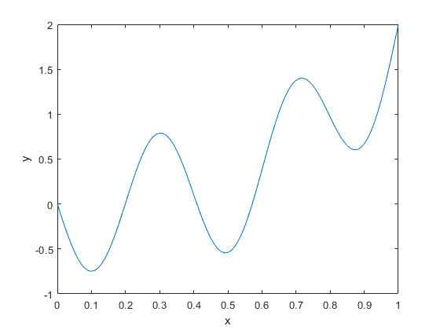

Contents
Creating custom potential term as a func object
If the user cannot find the desired models from the modelling functions provided with the toolbox, they can define their own potential terms by creating custom func objects. To create a func object one needs a Workspace structure and the function handle that uses only the Workspace as its input. The Workspace structure should contain all the required variables, constants and coefficients (at least empty fields) in the Variables, Constants and Coefficients substructures, respectively. If there are any dependencies between any of the abovementioned parameters, these should be stored as strings in the Dependencies substructure. The values of the parameters can be left empty for later addition (recommended when there are multiple potential terms using the same parameters) or they can be preset in the creation process.
Let's create a simple custom func object as an example. The easiest way is to build the function handle first to see which parameters are required for the Workspace
funcHandle = @(Workspace) Workspace.Constants.a*Workspace.Variables.x.^Workspace.Coefficients.b - Workspace.Variables.t.*Workspace.Coefficients.c;
The function handle above represents function
For this potential term the Workspace contains one constant , two variables and , and two coefficients and .
The substructures needed for the Workspace can now be created:
Constants = struct('a',2); Variables = struct('x',[],'t',[]); Coefficients = struct('b',[],'c',[]); Dependencies = struct('t','Workspace.Variables.t = sin(5*pi.*Workspace.Variables.x);');
Here theconstant has been assigned value 2 in the creation process but the other parameters are left empty for now. Also the variable is defined to be dependent on the value of variable through function .
After the substructures have been defined, the Workspace structure can be built:
Workspace = struct('Variables',Variables,... 'Constants',Constants,... 'Coefficients',Coefficients,... 'Dependencies',Dependencies);
The func object itself can now be created by calling the constructor method:
theFunc = func(funcHandle,Workspace);
Warning: Workspace contains coefficients with no set fit limits. Consider setting the limits with the setFitlims method before using this func object for fitting.
The warning issued by the calling the constructor reminds thatto be able to perform a curve fit using the fitUI function, the user has to define fit limits as a structure containing a field for each coefficient. The limits have to be provided as a 1x3 cell array of either
- Numeric scalars
- Character arrays representing equations that output numeric scalars. The equations can be dependent on the independent variable of the fit (marked with x regardless of its name in the Workspace structure). See fitUI documentation for more information on the usage of the independent variable.
Cells of the array represent the lower limit, the starting point and the higher limit in order {low,start,high}.
The fit limits can be provided as a third optional input for the constructor method, or they can be added or modified later on with the method func.setFitlims. Input types accepted by setFitlims are
- Compelte or incomplete Fitlims structure
- Name value pairs with the names representing the respective coefficients and the values their limits.
% Providing inclomplete Fitlims structure: Fitlims = struct('b',{{0,2.5,5}}); % Double braces have to be used to keep cell array form theFunc.setFitlims(Fitlims) % Providing a name-value pair with dependent expressions: theFunc.setFitlims('c',{'min(x)','mean(x)','max(x)'}) disp(theFunc.Fitlims)
b: {[0] [2.5] [5]}
c: {'min(x)' 'mean(x)' 'max(x)'}
To add missing parameters to the object, the method func.replaceParams has to be used.
theFunc.replaceParams('x',(0:0.01:1)');
disp(theFunc.viewWorkspace)
description valueMean valueMin valueMax standardDeviation
________________________________________________ _________ ________ ________ _________________
a {["Constant: scalar without confidence bounds"]} 2 NaN NaN NaN
x {["Variable: vector of length 101" ]} 0.5 0 1 NaN
t {["Variable: dependent vector of length 101" ]} 0.1258 -1 1 NaN
b {["Coefficient: no values assigned" ]} NaN NaN NaN NaN
c {["Coefficient: no values assigned" ]} NaN NaN NaN NaN
Alternatively the the func object could now be included to an electrolyzerModel object with electrolyzerModel.addPotentials method. Parameters can be replaced also with the help of electrolyzerModel.replaceParams method.
For determining the values for parameters and through curve fitting, their values have to be left empty. For this example, we assume the fit has been performed and the result has been:
b = 3.25; c = 0.75; theFunc.replaceParams('b',b,'c',c); disp(theFunc.viewWorkspace)
description valueMean valueMin valueMax standardDeviation
___________________________________________________ _________ ________ ________ _________________
a {["Constant: scalar without confidence bounds" ]} 2 NaN NaN NaN
x {["Variable: vector of length 101" ]} 0.5 0 1 NaN
t {["Variable: dependent vector of length 101" ]} 0.1258 -1 1 NaN
b {["Coefficient: scalar without confidence bounds"]} 3.25 NaN NaN NaN
c {["Coefficient: scalar without confidence bounds"]} 0.75 NaN NaN NaN
With all the parameters defined, the value of the function can be calculated using method calculate:
y = theFunc.calculate(); figure plot(theFunc.Workspace.Variables.x,y) xlabel('x') ylabel('y')
Reason for using func objects
This example doesn't demonstrate the reason behind the usage func objects instead of directly using the function handles for fitting. The special features of func class enable three main aspects:
- It enables the addition of two func objects with a static method func.add so that the function handle is maintained in readable form.
- Adding two func objects unites the Workspaces of these two enabling later modifications of the parameters.
- Using only one structure as the parameter for the function handle removes the need for correct input order for the function handle, as the function handle calls only the parameters it needs and uses them only in the intended way.
The flexibility of the Electrolyzer Modelling Toolbox is mainly due to the ability of combining multiple potential functions in desired way still maintaining the ability to perform parametrization through curve fitting. At the same time, the function stays fully readable and can be modified as needed.